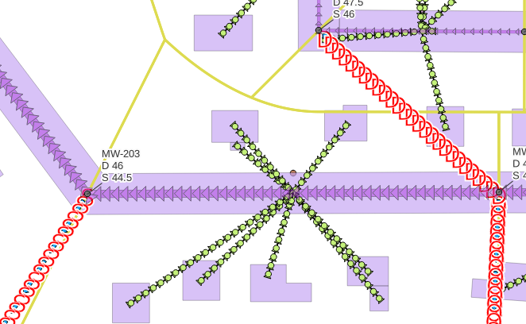

FAQ
Fehlerhafte Anzeige Linienelemente
Problem: Symbole auf Haltungen und Verbindungselementen (Pumpen, Wehre, etc.) wiederholen sich in viel zu engem Abstand
Lösung: Der Grund für dieses Problem ist eine Änderung in der Liniendarstellung von QGIS nach Version 3.22: Wenn Projekte mit einer höheren QGIS-Version erstellt und anschließend mit einer niedrigeren Version weiterverarbeitet werden, wird das Attribut zur Wiederholung von Symbolen auf Linien falsch gespeichert. So wird beispielsweise, wie auf dem Bild unten, der Fließpfeil statt nur mittig nun in einem Intervall angezeigt.
Zur Fehlerbehebung wird im Menü unter QKan unter dem Punkt Allgemein mit QKan-Projekt aktualisieren ein Fenster geöffnet, welches ohne eine weitere Auswahl mit OK geschlossen werden kann. Nun sollten die Symbole richtig angezeigt werden.
{kind=link}
Objektabfrage funktioniert nicht
Problem: Bei der Verwendung der Menüfunktion  Objekt abfragen wird nur ein Formular mit tabellarisch
angeordneten Feldern anstelle eines QKan-Formulares angezeigt.
Objekt abfragen wird nur ein Formular mit tabellarisch
angeordneten Feldern anstelle eines QKan-Formulares angezeigt.
Lösung: Hierfür gibt es zwei mögliche Ursachen, welche auch beide zusammen vorliegen können:
Die Projektdatei wurde (in der Regel zusammen mit der eingebundenen QKan-Datenbank) in ein anderes Verzeichnis verschoben. Ist dies der Fall, kann im Menü unter QKan unter dem Punkt Allgemein mit QKan-Projekt aktualisieren der Pfad wieder hergestellt werden. Dazu muss in dem sich öffnenden Fesnter das Kontrollfeld im Bereich „Layer anpassen > Formularanbindung auf QKan-Standard setzten“ sowie das Optionsfeld im Bereich „QKan-Layer > alle anpassen“ aktiviert werden (siehe Bild unten).

Der Modus für die Anzeige von Objektinformationen wurde noch nicht umgestellt. Es wird empfohlen folgende Einstellung vorzunehmen: Über dem Menüpunkt Ansicht > Bedienfelder > Identifikationsergebnis das Formular öffnen. Dort über den Menüpunkt Abfrageeinstellung das Kontrollfeld „Objektformular automatsich öffnen, wenn ein einzelnes Objekt abgefragt wird“ aktivieren. Außerdem sollte unten in der Auswahlliste Modus der Eintrag „Layerauswahl“ gewählt werden.